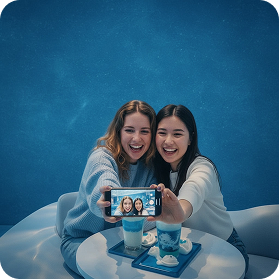
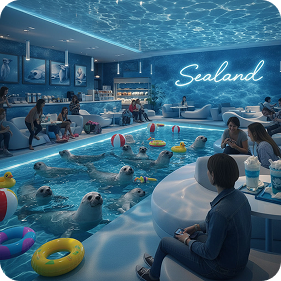
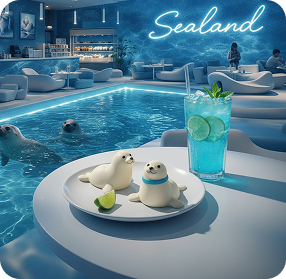
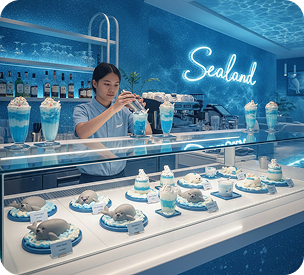

Про нас
Один хлопчик який дуже любив тюленів мріяв створити неповторне кафе і йому це вдалося, тому запрошуємо вас в єдине кафе з тюленями
Атмосфера




Відгуки

Seal_lover2707
⭐️⭐️⭐️⭐️⭐️
Це просто вау! Зайшли сюди з сином на вихідних, і я вперше за довгий час зміг спокійно випити свою каву. Малий був у захваті від котиків, що плавають прямо біля столика. Дизайн неймовірний — таке враження, ніби ми справді під водою. Блакитне молочне коктейль-морозиво дуже смачне, не занадто солодке. Обов'язково повернемося ще!

Love_seals3090
⭐️⭐️⭐️⭐️⭐️
Дівчата, це розрив! Найкраща локація для сторіз у цьому місті. Неонова вивіска 'Sealand' на фоні водяних відблисків виглядає магічно. Освітлення ідеальне для фото без жодних фільтрів. Котики дуже милі, вони такі допитливі! Замовляла фірмовий блакитний лате — естетика на 10/10. Готуйтеся до черг, бо це місце стане хітом TikTok!

Seal_lover2707
⭐️⭐️⭐️⭐️⭐️
Ніколи не бачила нічого подібного! Онука привела мене сюди на день народження. Спочатку я скептично поставилася до такого 'сучасного' місця, але тут напрочуд приємно. Дуже чистенько, світло м'яке, очі не втомлюються. Спостерігати за тваринами — справжня терапія. Дуже ввічливий персонал, допомогли вибрати десерт. Це місце дарує спокій, якого зараз так не вистачає.

Seal_lover2707
⭐️⭐️⭐️⭐️⭐️
Цікавий концепт. Шукав місце, де можна змінити обстановку та трохи попрацювати. Атмосфера дуже заспокійлива, шум води та сині тони реально допомагають зосередитися. Крісла мега-зручні, наче хмаринки. Єдиний мінус — іноді відволікаєшся на тюленів, бо вони занадто кумедні. Інтернет швидкий, кава гідна. Лайк за футуристичний дизайн.
Seal54678
⭐️⭐️⭐️⭐️⭐️
Це просто вау! Зайшли сюди з сином на вихідних, і я вперше за довгий час зміг спокійно випити свою каву. Малий був у захваті від котиків, що плавають прямо біля столика. Дизайн неймовірний — таке враження, ніби ми справді під водою. Блакитне молочне коктейль-морозиво дуже смачне, не занадто солодке. Обов'язково повернемося ще!
Seals_are_my_life
⭐️⭐️⭐️⭐️⭐️
Цікавий концепт. Шукав місце, де можна змінити обстановку та трохи попрацювати. Атмосфера дуже заспокійлива, шум води та сині тони реально допомагають зосередитися. Крісла мега-зручні, наче хмаринки. Єдиний мінус — іноді відволікаєшся на тюленів, бо вони занадто кумедні. Інтернет швидкий, кава гідна. Лайк за футуристичний дизайн